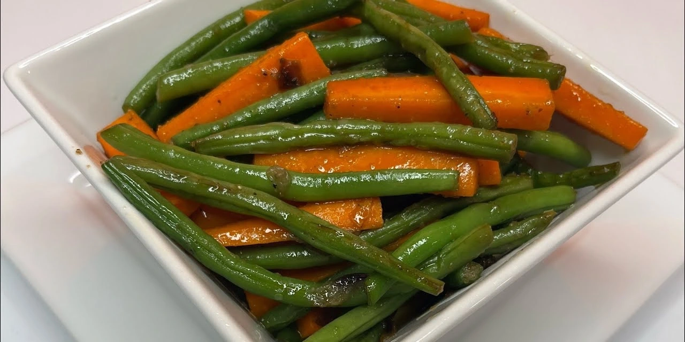

Fossolia Recipe
Fossolia is a popular Ethiopian dish made with green beans, carrots, and a mix of spices. It is often served as a side dish, providing a savory and flavorful contrast to the main dish, typically accompanied by injera.
Ingredients:
Fresh green beans
500g
Carrots
2 medium
Onion
1 large
Garlic
2 cloves
Tomato paste
2 tbsp
Spiced butter (niter kibbeh)
3 tbsp
Salt
To taste
Instructions:
- Wash and cut the green beans into bite-sized pieces.
- Peel and slice the carrots into thin rounds.
- Heat the niter kibbeh in a large pan over medium heat.
- Add chopped onions and garlic, sautéing until soft.
- Stir in the tomato paste and cook for 2-3 minutes.
- Add the green beans and carrots, then pour in some water to cover the vegetables.
- Simmer for 15-20 minutes, or until the vegetables are tender and the flavors are well blended.
- Season with salt to taste, and serve warm with injera.
Tips:
- Feel free to add a pinch of berbere for extra spice.
- Using fresh green beans will bring out the best flavor in this dish.
- For a richer taste, you can add a dash of lemon juice just before serving.